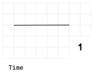

There's more to the picture,
then meets the eye.
Hey hey, my my.
Neil Young
The idea behind the MarbleDesignSystem
Diagrams have the unique ability to express complex things simply.
Never had reactive programming been made so visual.
Diagrams is transforming information into compelling images
Marble diagrams serve a method for
us to visualize processes over time.
This helps programmers and engineers to understand and design reactive
processes.
The overall goal of the MarbleDesignSystem is to provide a unified way of
reading and creating stream based
diagrams,
in particular one specific type of it, the marble diagrams.
This guide explains all building blocks of the design system step by step and
in detail.
In general we have some main rules that system follows:
-
Consistent
-
Intuitive
-
Easy
-
Detailed
-
Customizable
Consistency
There are several things to follow if you try to create a standard.
One of them is more critical for a positive outcome
than everything else, consistency.
By working with a standardized, reproducible approach
we managed to create a consistent way of drawing marble diagrams.
A set of rules developed over many many iterations, adopted and
simplified to serve as a guideline and blueprint for creating and
using
these diagrams.
Intuitive
As programming with Rx is hard we made sure to keep it intuitive.
By including a lot of people into the process of the creation
of this guide we collected a lot of personal feedback to improve the
system.
To make sure we consider a common way interpretation we created
several public polls
we were collected and evaluated the general understanding.
This helped us to make our system intuitive to understand.
Easy
As mindset behind the system are several principles.
One of them is “Easy to adopt and create”, which means we want to
provide a way for everybody to
read and create marble diagrams.
To achieve this we create all diagrams in either googleSlides oder Powerpoint.
We believe this two options enable a big group of people to edit
and draw these diagrams.
Detailed
Marble diagrams exist since a long time now.
As there was no well thought standard out there and not all edge cases
considered,
people started to create their own solutions to visualize processes.
These let to a variety of different ways of drawing these diagrams.
Some of the better approaches were able to visualize more complex prozesses,
but there is one essential thing which nobody considered yet,
but which is most critical to understand processes based on Rx. The internal
behavior of operators.
This system is not only providing a consistent, standardized way of drawing
marble diagrams,
but also offers a way to visualize the internals of operators.
Of course based on the systems rules it selfe.
Technically Correct
All diagrams should be able to mirror the source code as accurate as possible, therefore the
Design Tokens
-
Unit
-
Color
-
Shape
-
Line
-
Size
Components
-
Time
-
Time progress
-
Moment in time
-
Consumer Event
-
Notification
-
Complete
-
Error
-
Operator
-
Operator Context
-
Operation
Diagrams
-
Description
-
Legend
-
Flow description
-
Diagram
-
Beyond the standard
Design Tokens
UNIT


The unit for width and height in marble diagrams is called a block.
A block is a rectangle with equal width and height.
Positioning of objects and text is also measured in blocks.
To have a convenient unit we use em with the base of 1 blok.
Sometimes time matters. The smallest unit of time is called frame.
A frame is a unit for time and expressed in width. 1 frame equals to the width of 2 blocks.
FONT
-
FONT-FACE
-
FONT-SIZE
-
FONT-STYlE
Text is used to name things or give more information to a specific part of a diagram like observables, operators and events like subscribe or unsubscribe.
It is furthermore used in notifications to give more detailed information about their content.
FONT-FACE
The design guide doesn’t limit the choice of font.
Only a few limitations are suggested.
Serif font-face and mono-space letter.
Serif Font-Face
Serif font-face has compared to the serif font-faces less visual noise.
Mono-space
Mono-space font has to be used in the description of observables, operators or in the text of notifications.
This ensures that the with of text is directly proportional to the number of characters and therefore simplifies
the positioning and alignment of text in diagrams.
FONT-SIZE
The font-size is measured in em, a scalable unit for text.
In this design system 1em is equal to 1 block, the unit for width and height.
There are 3 different sizes defined to describe marble diagrams.
We will elaborate more on this later.
FONT-STYLE
The font-styles are limited to
2 different styles, normal and bold.
We will elaborate more on this later.
COLOR
All colors are are barrier free and used for specific things in the diagram.
There are 3 fixed colors and 4 to n colors that are free to choose.
For Text, lines, and arrows the “line” color is used.
The “background” color is not only used for the background but also for text to get an acceptable color ratio.
For “notification” colors you can use the defined colors 1 - 4 or any other color of your choice.
All notification colors have the same meaning. There is no “danger” or “success” color.
You can check your pallet here.
The “inactive” color is used for anything that should be recognized as inactive.
COLOR
Colors serve the purpose to distinguish between notifications or observables.
Try to use as less colors as possible to keep the visual noise of a marble diagram low.
If you create your own color patterns keep in mind that you can use text inside shapes.
Also always check your palette including text with a color contrast tool like accessible-color-matrix
Example Palettes:
Palette 1
Palette 2
Palette 3
Links:
http://chromelens.xyz/
Contrast checker
Spectrum, ChromeLense
Color Palettes
ColorByCulture
LINE
Lines are here to symbolize time.
Time without a measurement as line or area as shown with [1] and [5], a specific time period is shown under [4] or an interaction at a specific point in time ilke in [2] and [3].
The interaction can be initialized from the consumer [2] to the producer [3,6].
Lines from the consumer side [2] have in some cases description in form of the letters S, U and C.
Some lines from the producer side [6] can be angled. This is possible to the right side only. [7] [8]
Update to latest version of components
SHAPE
Shapes, same as colors help to distinguish between notifications.
You can use the suggested set or create your own set of shapes.
Try to use as less different shapes as possible to keep the visual noise of a marble diagram low.
If you create your own shapes keep in mind that evers shape should be same height and width to keep the
sizing and spacing as easy as possible.
Also consider that every shape should be able to have dynamic with. (dynamic in number of blocks)
SIZE
There are 2 different sizes, normal (2em) and small (1em).
Small size is only possible for this subset:
[1] Time
[2] Notification
[3] Completion
[4] Error
Small size is rarely used but can serve in some cases as a useful detail information.
For example to sketch higher order observables or operators.
COMPONENTS
COMPONENTS
Components are the smallest entities in marble diagrams.
The different design tokens are applied on components. Diagrams are a composition of components.
OBSERVABLE

Time in marble diagrams is represented as an arrow going from left to right.
The arrow at the same time is also a representation of an observable it selfe.
Time is measured in frames, a superset of blocks.
1 frame is 2 blocks
TIME SPAN
Time Span is here to specify a certain duration of time.
The smallest possible size is 1 turn in the event loop
The description of the time span is placed inside the box and consists out of an amount directly followed by a unit.
No space inbetween.
The amount is a number.
The unit, as singular, can be any known unit of time as well as the unit frame, which is equal to one block.
For time units you can use shortcuts as ms for milliseconds or s for seconds as well as full name i.e. month or year.
Of course you can also use any other imaginary unit of time like a moment ;-)
OPERATION
Operation is an event triggered from the consumer of an observable.
Operation symbolizes the interaction with the notifications and operators.
The operator start from notifications
Examples for inactive operations (stop at operator stop at output)
CONSUMER EVENT
Consumer events are directed bottom up.
It starts from the result observable and ends at the operator context,
or the observable itself.
Use [S] If you subscribe
And [U] If you unsubscribe
The position of the box is 0.15em above the observable.
If the box has to be placed next to it on the left side and 0.15em inside the start of the observable.
Other components in the same frame are queued in the next free block to the right.
NOTIFICATIONS
Notifications are the possible content of observables.
They ocurre over time and are a representation of any particular thing.
Notifications can have:
- Color
- Shape
- Content (proper contrast to fill color)
- With (in full blocks)
Color and content combination should always have a proper contrast.
Find a onlinetool here: Contrast checker
The value color can be only black or white.
With is here to provide enough space for more content than just 1 chars.
Every shape can have a dynamic width.
COMPLETION
Completion symbolizes one possible end of an observable.
ERROR
Error symbolizes one possible end of an observable.